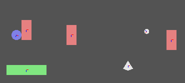

physics_world_draw_debug(flag)
| Streit | Beschreibung |
|---|---|
| flag | Der Flag-Wert zum Anzeigen verschiedener Debug-Funktionen |
Rückkehr: N / A
Diese Funktion zeichnet eine Darstellung des physikalischen Weltsystems des Raums, um beim Debuggen zu helfen, wenn Sie Schwierigkeiten haben, die Physikszene richtig arbeiten zu lassen. Manchmal kann das Problem im Rendering-Teil des Spiels liegen, zum Beispiel kann ein Sprite an der falschen Position oder Rotation gezeichnet werden, was den Anschein einer falschen Physik hat, oder es kann sein, dass Ihre Berechnungen nicht korrekt sind. In jedem Fall hilft Ihnen diese Funktion, das Problem zu finden und zu lösen, indem Sie zeichnen, was in Ihrem Physiksystem vor sich geht. Um dies zu tun, müssen Sie ihm mitteilen, welcher Teil des Systems gezeichnet werden soll. Dazu wird ein Wert übergeben, der aus den in verschiedenen "Flag" -Konstanten gespeicherten Bits erstellt wurde:
| Streit | Beschreibung |
|---|---|
| phy_debug_render_aabb | Dies zeigt die absolute Begrenzungsbox jeder Leuchte in Bezug auf die Raumachse |
| phy_debug_render_collision_pairs | Dies zeigt alle Fixtures an, die gerade kollidieren |
| phy_debug_render_coms | Dies markiert das Massenzentrum jeder Leuchte im Raum |
| phy_debug_render_core_shapes | Zeigt die Grundformen an, aus denen die Leuchten im Raum bestehen |
| phy_debug_render_joints | Dies wird jedes der Gelenke aller Leuchten im Raum zeichnen |
| phy_debug_render_obb | Dies zeigt die relative Begrenzungsbox für die Leuchten im Raum an |
| phy_debug_render_shapes | Dies zeigt die tatsächlichen Formen, die die Leuchten im Raum bilden |
Also, um zwei dieser Optionen zu zeichnen, müssten wir ein bitweises "oder" (in GameMaker Studio 2 dies durch | dargestellt) auf beiden ausführen und die resultierende Variable für die zu verwendende Funktion speichern. Hier ist ein Beispiel, wie Sie eine Variable für die Funktion festlegen würden, die nur die Massenmittelpunkte und die Gelenke aller Leuchten in einem Raum zeichnet:
flag = phy_debug_render_coms | phy_debug_render_shapes
Was würde dir so etwas geben:

Wie Sie mit dem obigen Code sehen können, werden nur die Formen und Massenmittelpunkte auf dem Bildschirm gezeichnet (sowie Farben, die ihre Zustände darstellen - für weitere Informationen überprüfen Sie bitte die Box 2D Dokumentation online). Auf die gleiche Weise können Sie mehr oder sogar alle der Konstanten anzeigen, die Sie debuggen möchten... Nur "oder" sie alle zusammen! Eine weitere Sache sollte beachtet werden - diese Funktion sollte nur im Zeichenereignis einer Instanz aufgerufen werden, deren Tiefe niedriger ist als diejenigen, die Sie debuggen möchten, oder sonst werden Sie die Debug-Informationen nicht sehen können.
flag = phy_debug_render_aabb |
phy_debug_render_collision_pairs | phy_debug_render_obb;
physics_world_draw_debug(flag);
Der obige Code wird alle absoluten Bounding Boxes, die relativen Bounding Boxes sowie die Fixtures innerhalb des aktuellen Physiksystems in Kollision bringen.